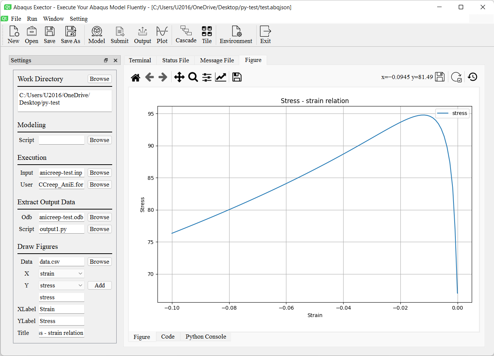

Documentation¶
Main Interface¶
This is the main interface of Abaqus Executor.

There are three main parts：menu bar, tool bar, and main working area. All actions available in the menu bar, several most frequently used actions are showed in the tool bar. The working area is the place to make the magic which will be showed later.
Create, Open, Save Project Files¶
The first thing is to create a new project file, you can click File -> New button in the menu bar of New button in the tool bar or use the short cut Ctrl + N to create a new project file. The project file of Abaqus Executor is a plain text file with the extension of .abqjson, it is a JSON-format file stores the configuration of the project.
You can also directly write the project file according the following format and save it as a .abqjson file:
{
"modelScript": "model-script-file-path",
"input": "input-file-path",
"user": "user-subroutine-file-path",
"odb": "abaqus-odb-file=path",
"outputScript": "output-script-file-path",
"data": "data-file-path",
"x": "x-axis-for-plotting",
"ys": [
"y-axis-for-plotting"
],
"xlabel": "x-label",
"ylabel": "y-label",
"title": "title"
}
When you finished the job, please don’t forget to click the File -> Save or File -> Save As button in the menu bar of Save or Save As button in the tool bar or use the short cut Ctrl + S or Ctrl + Shift + S to save the file before you close the application.
When you have created a project file, you can click the File -> Open button in the menu bar of Open button in the tool bar or use the short cut Ctrl + O to open the project.
You can also set the default opening application for .abqjson to Abaqus Executor. After that you can double-click the project file to open it in Abaqus Executor. The executable file path of Abaqus Executor is something like this:
C:\Program Files (x86)\Abaqus Executor\executor.exe
Configure The Project¶
When you have opened a project file, it would be like this:
{kind=link}
First, you choose the files to be processed, like the Python script to create the model, the input file, the user subroutine file, etc. Then, click actions in Run in the menu bar or in the tool bar, corresponding action will be submited. Each action corresponds to each section in the project settings.
The Model, Submit, and Output will use the Abaqus command to call the Abaqus kernel.
cd work-directory
abaqus cae noGUI script.py
abaqus job=job-name input=input-name user=user-name int double
abaqus database=odb-name script=output-script.py
Plotting the figures¶
The Plot action is used to plot figures. The following Python code is used to plot the figure
import matplotlib.pyplot as plt
import pandas as pd
fig = plt.figure()
ax = fig.add_subplot(111)
df = pd.read_csv('data-file-path.csv')
lines = 0
x, ys = 'x', ['y']
for y in ys:
if y not in df.columns:
continue
lines += 1
ax.plot(df[x], df[y], label=y)
if lines > 0:
ax.legend()
ax.set_xlabel('xlabel')
ax.set_ylabel('ylabel')
ax.set_title('title')
ax.grid()
fig.tight_layout()
You can customize the figure by edit the Code in the Code tab and click the Update button ( , the second button of the three buttons on the right). You can also click the Restore button (
, the second button of the three buttons on the right). You can also click the Restore button ( , the third button of the three buttons on the right) to set it to the default style.
, the third button of the three buttons on the right) to set it to the default style.
Or, you can also customize the figure using the matplotlib default tool button to customize the figure.
{kind=link}